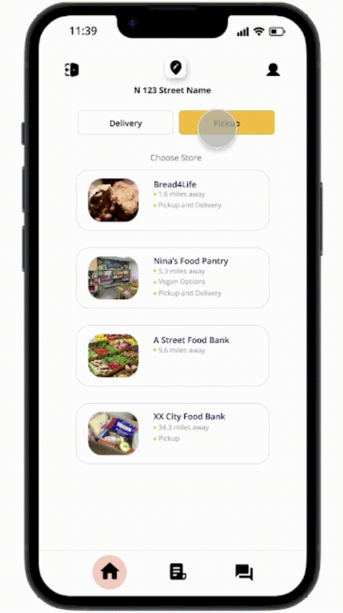
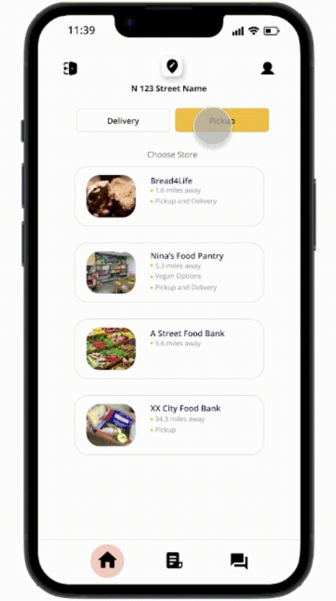

Foodix
Foodix is a online delivery app with a simple yet powerful goal - to connect low-income households with nearby food banks, allowing them to preorder essential groceries effortlessly. As someone who has struggled living paycheck to paycheck, I know that time is a precious resource. By connecting users with nearby food banks and allowing them to preorder groceries, Foodix not only helps families who struggle with time constraints but also ensure that the food in food banks reaches more people rather than being needlessly discarded. By creating a user-friendly interface, I hope to empower individuals facing food insecurity and provide a convient way to access the resources they need.
My Role
My role in this project is to create an app that would assist in providing an easier access to food and groceries. I conducted user interiews and identified what the outcomes of this product would consist. Questions I took into consideration during the research process were; What major features this app include? How users can achieve their goal within the app? How would they go about doing it? In the design phase, I identified the most important aspects of the app and brainstormed how I could make those aspects not just functional but also intuitive and accessible.
Tools
Figma, FigJam, Procreate
Duration
3 Weeks

Inspired by my experience volunteering at a local food bank, where families would drive through and volunteers would load their trunks, I envisioned a similar efficient service where families could swiftly obtain what they need without leaving their vehicles. Recognizing a key issue with the pre-packed food bags lacking consideration for food allergies or dietary restrictions, I aimed to develop an app where time-constrained families could select their desired items for pickup, enabling them to quickly and conveniently collect their groceries without hassle.The initial proposal underwent a series of constructive feedback conversations among fellow designers. As a solo designer on this project, the collaborative feedback process served as a blueprint for ideas and a source of valuable insights. The following are a few notes captured during one of these sessions.


Final Design
 
